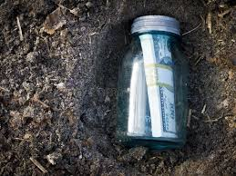

As pessoas idosas não colocavam dinheiro no banco, mas o enterravam próximo das suas casas. Como não queriam ser roubadas, não contavam para ninguém. Quando morriam, sua alma não descansava enquanto o dinheiro não fosse desenterrado. Então a alma penada escolhia uma pessoa de bem e vinha em sonho dizer o local exato em que havia enterrado o dinheiro. Esse sonho ocorria três dias consecutivos. A pessoa escolhida não poderia contar a ninguém o que estava sonhando. No final do terceiro dia, à meia-noite, a pessoa deveria ir até o local e desenterrar o dinheiro. O problema eram as aparições que surgiam na hora: ventos fortes, arrastar de correntes, gemidos etc. A pessoa que estivesse cavando não poderia olhar para o lado e ficar ali firme. Se aguentasse, encontraria o dinheiro e ficaria rico.
OLIVEIRA, Laércio Vitorino de Jesus (Org.). Memória: um patrimônio irrenunciável: comunidades do distrito de Ribeirão Pequeno da Laguna. Palhoça: Editora Unisul, 2010.